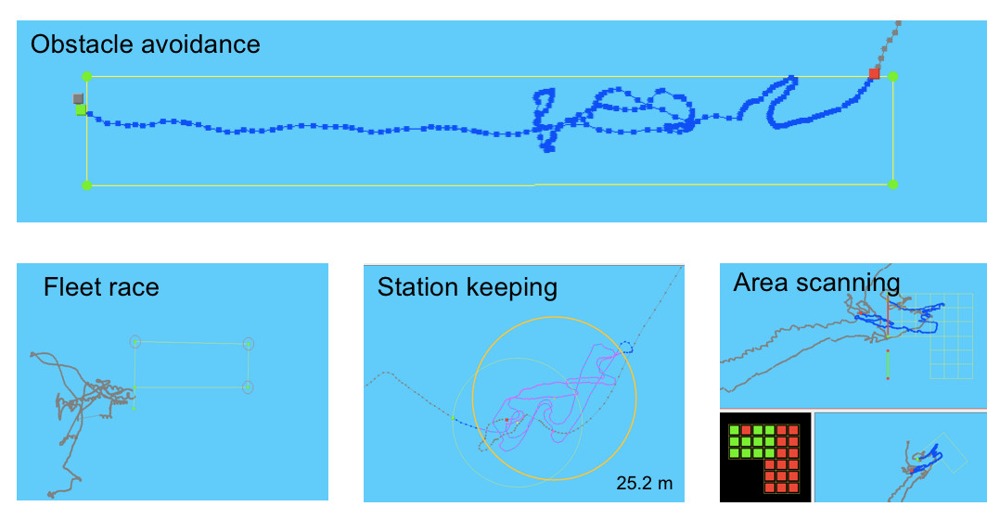
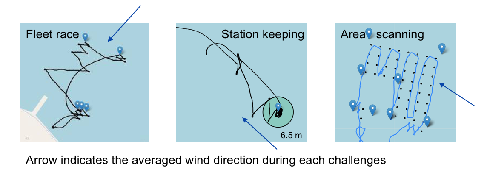

Autonomous Sailing Robot ProjectSailing robot is an autonomous boat, it use sustainable wind energy as propulsion power. It can be used in a long term oceanographical survey, routinely water quality monitor, marine animal tracking. Started this in Jan 2016, this student lead project aimed to design and build an open-source sailing robot system. We participate in top level competitions, organise open-day events, write blog posts, and give formal presentations in order to enrich the public understanding on the future of autonomy and clean energy. Competition challengesWe participated in the World Robotics Sailing Competition (WRSC) from 2016. Competition has four major challenges, the team who achieved the best among all challenges win the World Champion title. Those four challenges are all close related to the real user scenarios, in more details:
The team and our boatThose challenges might seems straight-forward, but to tackle them it do requires huge effort by many people. It hard to be done without team work. Our team is formed by students at University of Southampton with various backgrounds: ship science, electrical engineering, computer science, robotics and management.
No matter how complex each challenges might be, it could achieved by many several maneuverers. We developed a task based mission planning system that generate waypoints for each challenges. Those waypoints can either be single or multiple, stationary or dynamic based on the challenges. We also teach her how to sailing in different wind condition especially towards the wind by programming tack and jibe maneuverers. Please refer our wiki for details. Competition resultThe followings are maps with actual GPS trace taken from 2016 competition result. In general, those challenges turns out to be much harder than we expected.  You may already notices her struggle in reaching the start-line during the fleet race. Strong ocean current push the sailing robot back every time when she try to tack towards the start line and the rapid changing wind condition make it worse. Also human error made under intensive competition pressure is an important factor. But we quickly learn from mistakes and try to figure out the root cause of that. The rest challenges are accomplished with an acceptable result. You can read more stories on our blog. The awrad is given upon the team with best overall performance, even we are not all perfect but successfully finish three out of four challenges place ourself as champion of 2016 World Robotics Sailing Championship.  As we are getting more experienced, in 2017 most effort was made on the improvement of the system. We have implemented sensor fusion algorithm on board, developed a new dashboard, wrote before run selftest scripts, and do many tests. The competition result is better and we secure our champion title. Future plan and some random thoughtsTo further facilitate the robotics sailing, we host 2018 competition at Southampton. We welcome everyone who are interested in the sailing robot, marine autonomy, and clean transportation to join this competition and the conference. Details are available on the official competition website. One of the FAQs we had is “Why you want to the boat sailing by itself? Do you want to replace human sailors?”
Can this be the Uber on water or replace container ship? Is there any commercial available product?
How to started to build my own sailing robot?
|